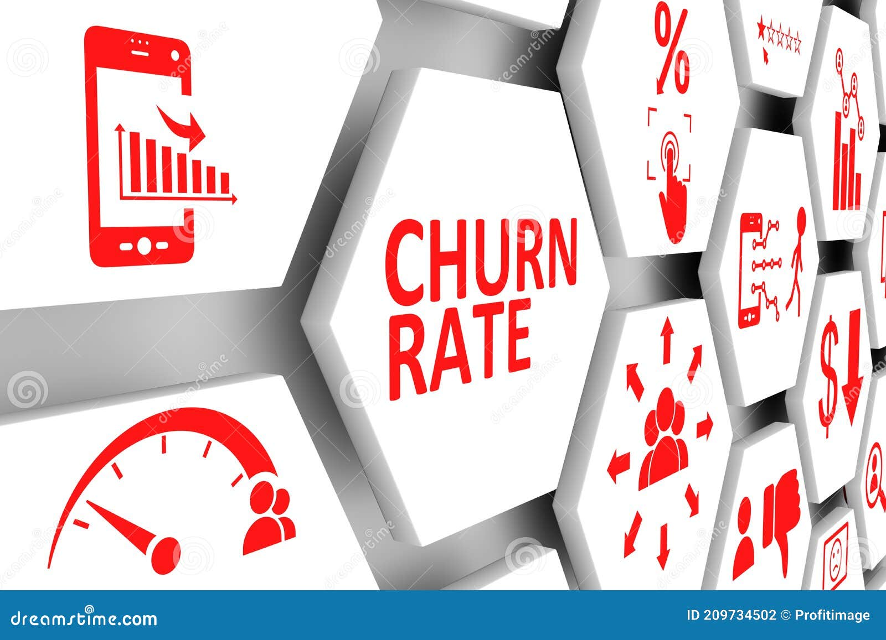
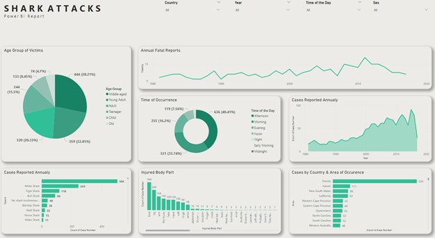
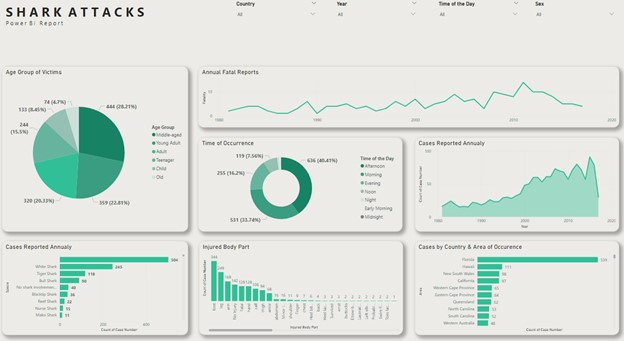

This is an Exploratory Data Analysis on Fuel Consumption dataset, which predicts the Co2 emissions from the historical data given, using the variables available.

The subject matter of this project is the data of stock prices of the 10 popular companies ( Apple, Amazon,
Netflix, Microsoft, Google, Facebook, Tesla, Walmart, Uber and Zoom) from year 2015 to 2021. The task is to
compare the stock price growth between the companies and generate insights.

This project is about using a Machine Learning Technique (Logistic Regression) on Python to predict customer churn in a telecommunications company.

This is a report on the consumption of energy from 1900s to year 2020. It contains a collection of key metrics maintained by the organisation "Our World". This analysis includes data on energy consumption (primary energy, per capita, and growth rates), energy
mix, electricity mix, and other relevant metrics.

This project is an average annual growth rate report of countries on The United Nations Development Program data for the 'Trade and Finance flows' dimension,
with the following indicators; Exports and Imports (% of GDP), Foreign direct investment, net inflows (% of GDP), Net official development assistance received (% of GNI),
Private capital flows (% of GDP), Remittances, inflows (% of GDP).
This report focuses on the likelihood of certain subscribers of a variety of mobile networks to patronize the EHMS,
thereby categorizing them into focus groups for different marketing strategies.

This project focuses on optimising the supply chain of the company, in order to increase customer satisfaction and improve operational efficiency.
The data in this project is comprised of the Products Sold, Revenue Generated, Shipping Costs, Order Quantity and Product Type amongst others.
This is a Stock Market Analysis of the Microsoft Corporation from its listing year in 1986 to 2022,
which consists of the following metrics; Opening, Closing, Highest and Lowest prices, as well as Daily Trade volume.
 
